Rapid Variable Resolution Particle Initialization for Complex Geometries
Navaneet Villodi and Prabhu Ramachandran*
Department of Aerospace Engineering
Indian Institute of Technology Bombay, Mumbai, India
Need for Particle Packing
Ghost particles for boundary treatment
Initialization of all particles
Capture intricacies of the body
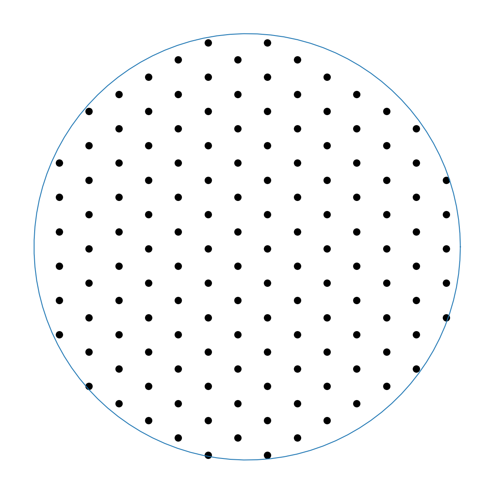
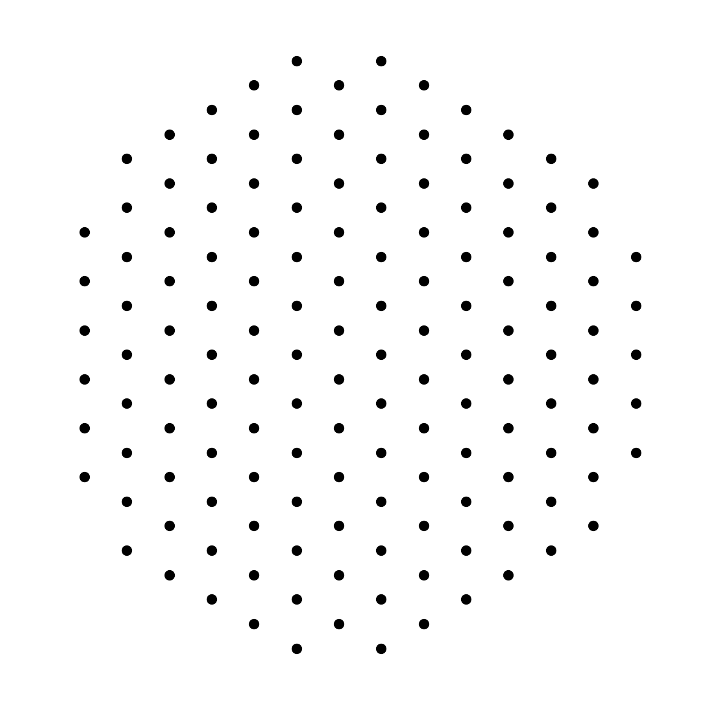
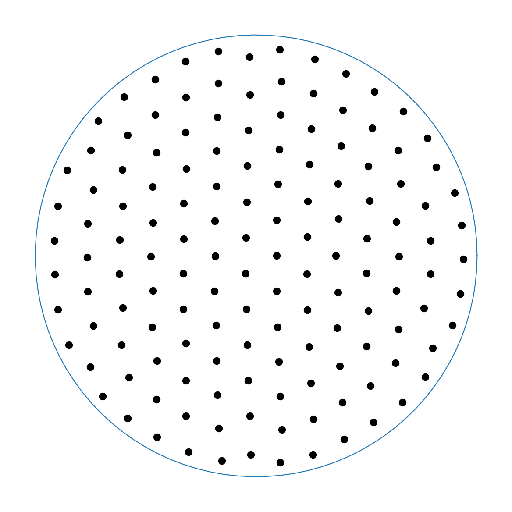
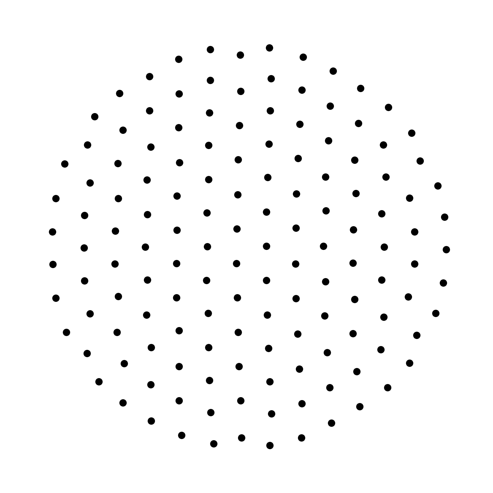
Simultaneous Initialization
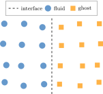
Simultaneous initialization of fluid and solid
with boundary in between.
Issues with existing approaches
Simultaneous initialization of fluid and solid 1, 2
Adaptive resolution 3
Complex procedures
Fast 3
1 Negi P, Ramachandran P. "Algorithms for uniform particle initialization in domains
with complex
boundaries." CPC. 2021 2 Zhao, Chenxi, et al. "Physics-driven complex relaxation for multi-body systems of SPH
method." CPC 313 (2025) 3 Jiang, Min, et al. "Blue noise sampling using an SPH-based method." ACM Transactions
on Graphics (TOG) 34.6 (2015)
1 Lind SJ, Xu R, Stansby PK, Rogers BD. Incompressible smoothed particle
hydrodynamics for free-surface flows: A generalised diffusion-based algorithm for stability and
validations for impulsive flows and propagating waves. Journal of Computational Physics.
2012;231(4):1499-1523. doi:10.1016/j.jcp.2011.10.027
2 Muta A, Ramachandran P. Efficient and accurate adaptive resolution for
weakly-compressible SPH. Computer Methods in Applied Mechanics and Engineering. 2022;395:115019.
doi:10.1016/j.cma.2022.115019
Algorithmic Components
Restoring Force
Particle Shifting1,2
Volume Adaptivity3,4
Mass Dissipation5
Interface Handling
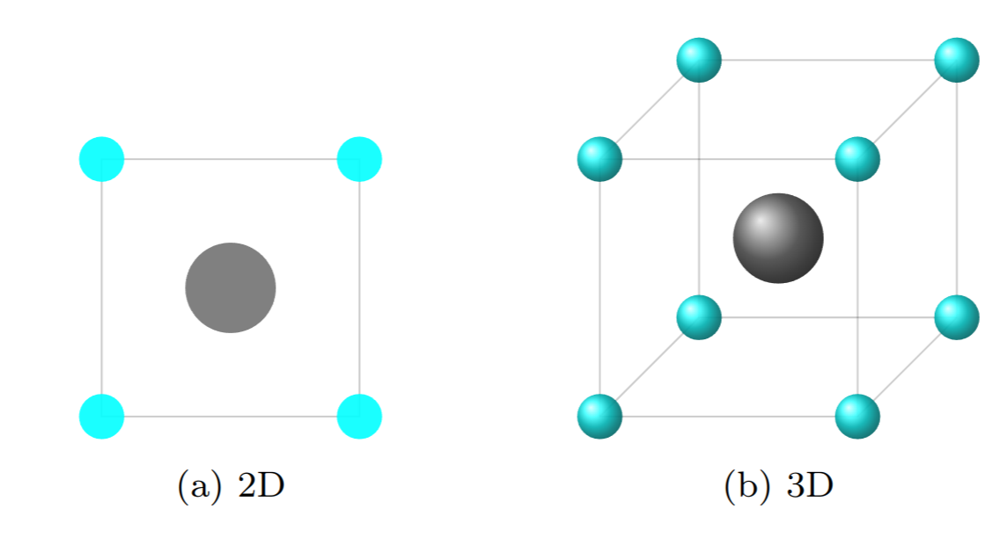
3 Sun PN, Le Touzé D, Oger G, Zhang AM. An accurate SPH Volume Adaptive Scheme for
modeling strongly-compressible multiphase flows. Part 1: Numerical scheme and validations with basic
1D and 2D benchmarks. Journal of Computational Physics. 2021;426:109937.
doi:10.1016/j.jcp.2020.109937
4 Haftu A, Muta A, Ramachandran P. Parallel adaptive weakly-compressible SPH for
complex moving geometries. Computer Physics Communications. 2022;277:108377.
doi:10.1016/j.cpc.2022.108377
5 Prasanna Kumar SS, Patnaik BSV. A
multimass correction for multicomponent fluid flow simulation using smoothed particle
hydrodynamics. Int J Numer Methods Eng. 2018;113(13):1929-1949. doi:10.1002/nme.5727
1 Antuono M, Bouscasse B, Colagrossi A, Marrone S. A measure of spatial disorder in
particle methods. Computer Physics Communications. 2014;185(10).
Results: Circle
2D, Constant Resolution
Density
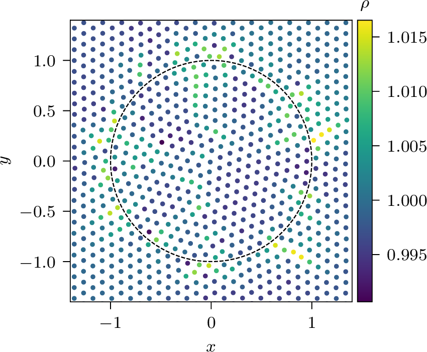
Kernel Gradient Sum
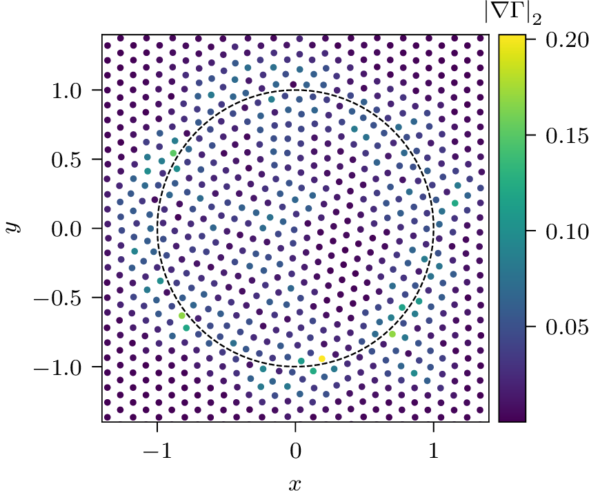
Results: Circle
2D, Constant Resolution
Global Particle Disorder
Convergence
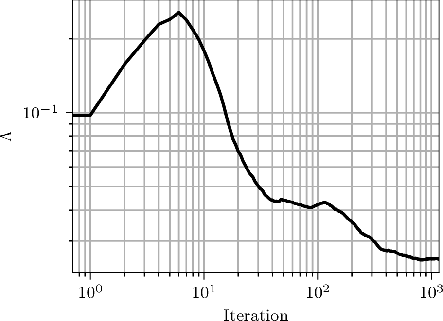
Results: Starfish
2D, Constant Resolution
Density
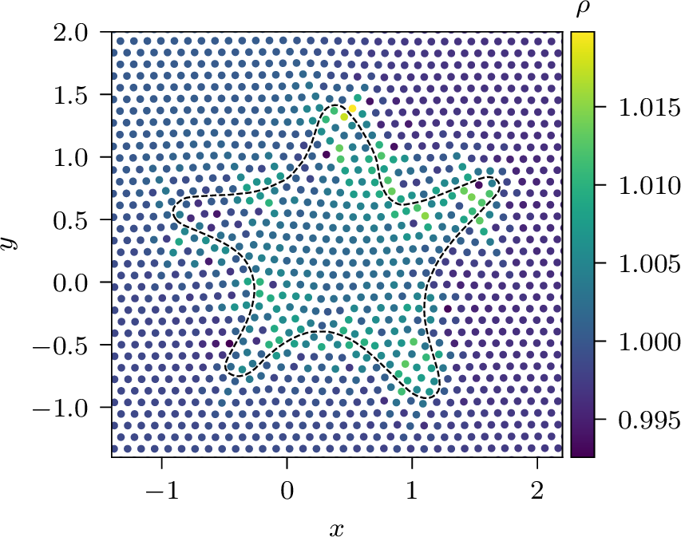
Results: Fire Emoji
2D, Variable Resolution
Density
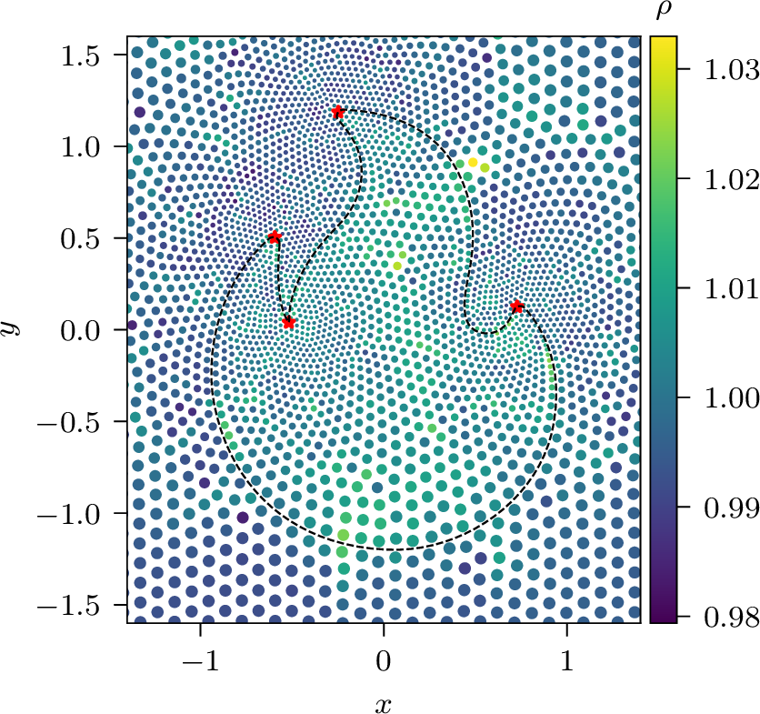
★ Represents points where \(\Delta s_\text{min} = 0.25
\Delta s\) has been set. \(\Delta s\) varies from 0.25 to 1.0.
Results: NACA 0012 Aerofoil
2D, Variable Resolution
Density
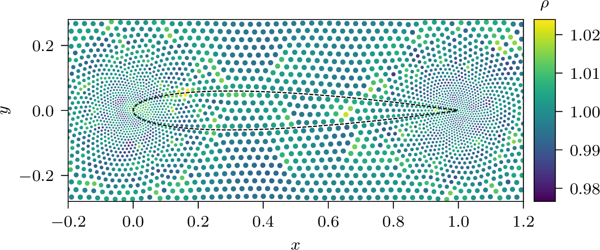
Results: Sphere
3D, Constant Resolution
Results: Stanford Bunny
3D, Constant Resolution
Results: Utah Teapot
3D, Constant Resolution
Results: Utah Teapot
3D, Constant Resolution
Results: Onera Wing
3D, Constant Resolution
Results: Onera Wing
3D, Constant Resolution
Results: Speedups
Problem
Serial
OpenMP
NR
Present
Speedup
NR
Present
Speedup
Circle
7.65
0.60
12.79
1.97
0.19
10.23
Starfish
18.24
2.56
7.11
4.47
0.66
6.74
Problem
3D OpenMP
NR
Present
Speedup
Stanford Bunny
909.42
32.48
27.99
NR : Negi P, Ramachandran P. Algorithms for uniform particle initialization in domains with complex
boundaries. Computer Physics Communications. 2021;265:108008. doi:10.1016/j.cpc.2021.108008
Summary
Presented a packing proceedure with the following desirable features:
✅ Simultaneous initialization of fluid and solid
✅ Adaptive resolution
✅ Avoids complex procedures
✅ Efficient and fast
✅ Uses common SPH building blocks
✅ Open source: gitlab.com/pypr/particle-packing (public soon)